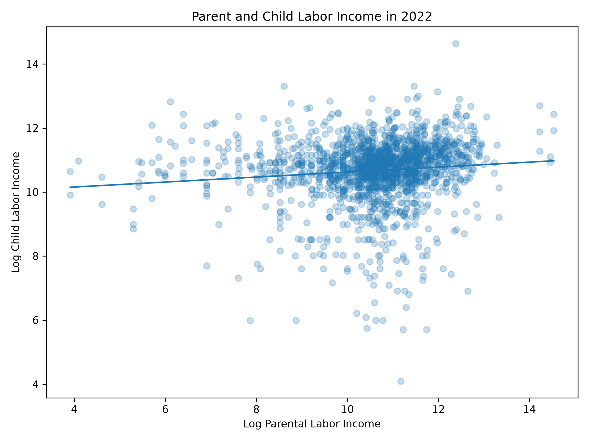
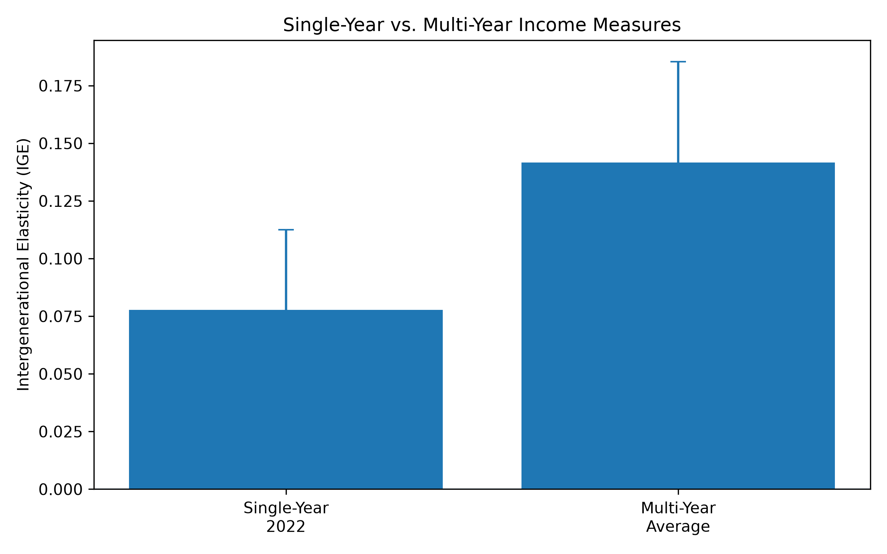
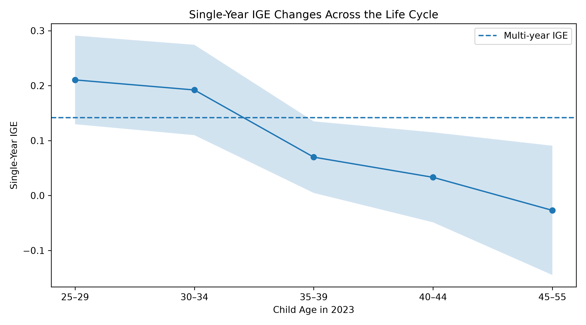

Matching Parents and Children with SQL: Measuring Intergenerational Income Mobility
How Much Does Parents’ Income Predict Their Children’s Income?
Intergenerational income mobility asks a simple but important question: how strongly is a child’s economic status related to the economic status of their parents?
Answering this question is not as easy as running one regression. Before estimating anything, we first need to identify which people are parents and children, connect them across different years, and construct meaningful measures of income.
In this tutorial, I use data from the Panel Study of Income Dynamics (PSID) and combine Python with SQL to build parent-child matches and estimate an intergenerational elasticity (IGE).
The main question is:
Does the estimated relationship between parent and child income change when income is measured using one year instead of several years?
Matching Parents and Children with SQL
The PSID follows individuals and families over time. The Parent Identification File provides links between children and their biological parents, while the Individual File provides stable person identifiers and family identifiers for each interview year.
SQL is useful because the information needed for this analysis is stored across several related tables.
Four SQL operations are especially important:
SELECTchooses the variables needed for the analysis.JOINconnects parent, child, individual, and income records.GROUP BYcombines multiple records belonging to the same child.- Aggregation functions such as
SUM()andAVG()create parental income and multi-year income measures.
A simplified version of the matching process looks like this:
SELECT
p.child_id,
p.parent_id,
c.personal_labor_income AS child_income,
r.personal_labor_income AS parent_income
FROM parent_pairs AS p
JOIN person_year_income AS c
ON p.child_id = c.person_id
JOIN person_year_income AS r
ON p.parent_id = r.person_id
AND c.income_year = r.income_yearOne important issue is that family income cannot simply be assigned to every member of the household.
Using the PSID sequence and relationship variables, I identify whether an individual is the family Reference Person or Spouse/Partner. The corresponding labor income is then assigned only to that person.
This prevents children who still live with their parents from incorrectly receiving their parents’ labor income as their own.
Measuring Intergenerational Elasticity
After constructing the matched parent-child sample, I estimate the following regression:
\[ \log(Y_{child}) = \alpha + \beta \log(Y_{parent}) + \epsilon \]
The coefficient \(\beta\) is the intergenerational elasticity, or IGE.
A larger IGE means that parental income is more strongly related to children’s income, suggesting stronger persistence of economic status across generations.
For example, an IGE of 0.20 means that a 10% higher parental income is associated with approximately a 2% higher child income.
What Does One Year of Income Show?
For the single-year analysis, I use 2022 labor income and restrict the sample to adult children between ages 25 and 55.
The scatterplot shows a positive relationship between parent and child income, although the regression line is relatively flat.
Using only 2022 income, the estimated IGE is:
\[ \hat{\beta}_{single} = 0.078 \]
The 95% confidence interval is approximately:
\[ [0.043,\ 0.113] \]
The sample contains 1,751 matched adult children.
An IGE of 0.078 means that a 10% increase in parental labor income is associated with approximately a 0.78% increase in child labor income.
However, one year of income may be a noisy measure of someone’s true long-run economic position.
A person might temporarily earn less because of unemployment, reduced working hours, school, family responsibilities, or another short-term shock. Someone could also temporarily earn more than usual.
Averaging Income Across Several Years
To reduce temporary fluctuations, I also construct a multi-year income measure using income from 2016, 2018, 2020, and 2022.
Because prices changed over this period, income from each year is first converted into 2022 dollars before calculating the average.
The inflation adjustment is:
\[ Y_t^{2022\$} = Y_t \times \frac{CPI_{2022}}{CPI_t} \]
I then calculate average parent and child income using at least three valid income observations.

The difference between the two estimates is substantial.
Using single-year income:
\[ IGE = 0.078 \]
Using multi-year average income:
\[ IGE = 0.142 \]
The multi-year estimate is about 82% larger than the single-year estimate.
The \(R^2\) also increases from approximately 0.011 in the single-year regression to 0.039 in the multi-year regression.
This suggests that averaging income over several years removes some temporary income noise and gives a more stable measure of long-run economic status.
Life-Cycle Bias
Another problem with measuring income in only one year is life-cycle bias.
A person’s current income may not represent their permanent income equally well at every age. Younger workers may still be early in their careers, while income later in life may be affected by changes in working hours, retirement decisions, or other factors.
To see whether this matters, I estimate the single-year IGE separately across different child age groups.

The estimates vary substantially across age groups:
| Child Age | Single-Year IGE |
|---|---|
| 25–29 | 0.210 |
| 30–34 | 0.192 |
| 35–39 | 0.070 |
| 40–44 | 0.033 |
| 45–55 | -0.027 |
The most important point is not that income mobility necessarily increases as people become older.
Instead, the results show that the estimated IGE is highly sensitive to the age at which children’s income is measured.
For children ages 25–29, the estimate is around 0.21. For children ages 40–44, it is close to zero, and for ages 45–55 the point estimate is slightly negative.
If income measured in one year perfectly represented permanent economic status, the estimated relationship should not change this much simply because income is observed at a different stage of the life cycle.
This instability provides evidence of life-cycle bias.
Data and Methodology
The data come from the Panel Study of Income Dynamics (PSID).
Three main PSID data sources are used:
- The Parent Identification File, which identifies biological parent-child relationships.
- The Individual File, which provides stable individual identifiers, family identifiers, age, sequence numbers, and relationships to the family Reference Person.
- Family income data containing labor income for the Reference Person and Spouse/Partner.
Python is used inside RStudio to process the data, while SQLite is used to perform the parent-child matching.
The SQL analysis uses SELECT, JOIN, GROUP BY, SUM(), and AVG() to construct the matched sample and income measures.
Observations with zero or negative income are excluded because the IGE regression uses the logarithm of income.
The single-year analysis uses children ages 25 to 55. The multi-year analysis requires at least three valid income observations from 2016, 2018, 2020, and 2022.
Takeaway
The main takeaway is that how income is measured has a large effect on estimates of intergenerational income persistence.
Using only 2022 income produces an IGE of 0.078, while averaging inflation-adjusted income across several years produces a substantially larger estimate of 0.142.
The age-group results also show that the single-year IGE changes considerably depending on when in the child’s life cycle income is measured.
SQL makes it possible to correctly connect parents, children, families, and income records in a complex longitudinal dataset such as the PSID. However, correctly matching people is only the first step.
For studying long-run economic mobility, multi-year average income provides a more stable measure of economic status than income observed in a single year.